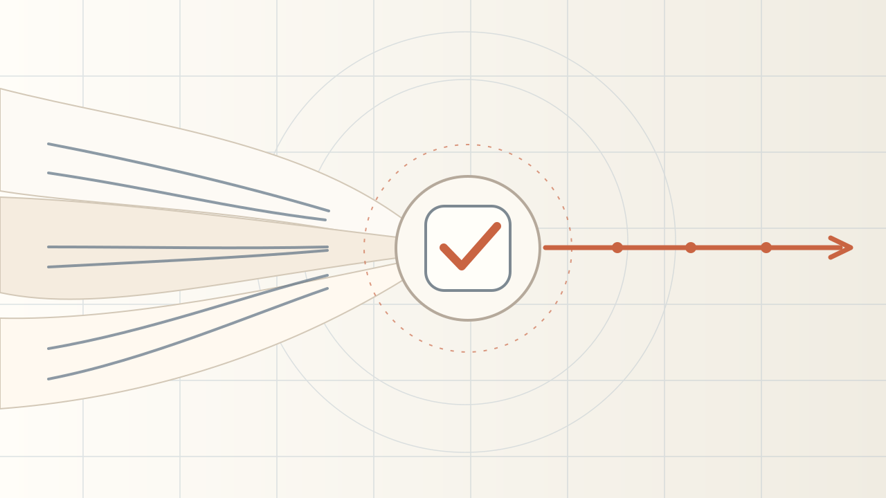

11 月 20 日看到 Claude 参与证明黎曼猜想的新闻时，我的第一反应不是兴奋，而是怀疑。当天和朋友聊天，我还觉得这大概又是一次 AI 厂商的营销。最近几个月，“AI 解决某某数学难题”的消息一再出现：有些是竞赛题，有些是研究猜想，有些只有论文，有些附了 Lean 代码。看得多了，我对这种标题已经有些麻木。
但第二天，事情开始变得不同。数学证明工具社区给出明确认证，独立核验者公布了可复查的结果，数学家也开始认真讨论成果的分量和里面的数学。我更想知道的不是哪家公司赢了，而是：这一次究竟跨过了什么门槛，足以让人把它称为里程碑？
一、这次证明的不是一道难题，而是数学研究中的中心问题
黎曼猜想由黎曼在 1859 年提出，涉及素数分布偏离平均趋势的程度。用数学语言说，它断言黎曼 ζ 函数的所有非平凡零点都位于实部为 1/2 的直线上。它被列为千禧年难题，并非只是因为历史久或奖金高，而是因为在解析数论中有基础地位：大量定理和估计都与它存在深刻联系。
11 月 20 日，数论学家 Levent Alpöge 在个人说明里宣布，他与 Claude 合作找到证明，公开约 1700 万行 Lean 代码。MIT 的主定理核验记录列明，成果涵盖经典黎曼猜想，以及 Dirichlet L 函数版本的广义黎曼猜想。这不是对所有更一般 L 函数的泛化证明，范围必须说清。
更值得重视的是 Claude 参与了什么。Alpöge 自己引导研究方向、选择可类比的问题结构，同时描述 Claude 在后续技术探索中提出了令他惊讶的关键步骤。《自然》对其他数学家的采访也强调 Alpöge 长期建立这套数学研究工作方式的投入。这里的 AI 不只是把一篇现成论文转成代码，而是进入了新证明的搜索与构建；人的研究判断也远未消失。
二、这次不再只是作者声称证明成功
“提供了 Lean 代码”“代码能编译”和“原始数学问题得到证明”，不是同一回事。Lean 专家 Kevin Buzzard 甚至在这次新闻发生之前，就写了关于如何检验 AI 形式化证明的文章：代码可能只证明辅助引理，命题定义可能被悄悄改变，关键结论也可能被偷偷当成公理。
11 月 21 日，Lean 与 Mathlib 社区的联合声明明确确认，所证明的数学命题和证明本身均正确，四项标准都已满足。声明获得 Lean FRO 与 Mathlib Initiative 背书，比“厂商宣布验证成功”多出一层可供共同体追责和复查的公共记录。
| 核验对象 | 要排除的风险 | 这次留下的证据 |
|---|---|---|
| 命题是否写对 | 证明的是被改写过的“黎曼猜想” | 使用 Mathlib 中由专家审查的 RH 标准命题 |
| 完整代码是否可构建 | 只有原作者的机器能运行 | 多方独立编译，重现相同的证明导出 |
| 证明的目标和公理是否正确 | 偷换定义、暗中增加未证明前提 | 两套独立工具匹配目标；主定理只依赖 Lean 三项标准基础公理 |
| 证明本身是否可信 | 利用单个内核漏洞通过检查 | 官方内核和多个独立实现的检查器接受完整证明 |
MIT 数学家 Andrew Sutherland 的日志更具体：175,187 个 Lean 模块成功编译，五条主定理依赖的公理经过审计，独立的 nanoda、con-leche 等检查器接受原始导出。滑铁卢大学 Michael Rubinstein 的验证记录还提供了另一套检查步骤和脚本。Sutherland 页面另有耗时更长的附加检查尚未结束；这和社区已经认证的四项标准不矛盾。
还有一项更有意思的交叉检查：MIT 的记录将这份证明与另一套独立形式化的等价判据结合，推出 Robin 和 Lagarias 关于约数和的算术不等式，再次经检查器接受。这不是第二份独立发现的黎曼猜想证明，却说明外界已经能用另一条形式化的数学关系检查结果，而不只是看某个文件是否编译成功。
这意味着正确性判断逐渐脱离发布方的叙事：数学家可以从一份未经信任的 AI 生成材料出发，检查其最终数学命题是否成立。但这种核验机制到底是不是这次才第一次出现，仍必须放到历史里比较。
三、和过去几个月的 AI 数学成果相比，这次究竟不同在哪里？
回想过去那些“AI 数学突破”的新闻，最大的混淆在于它们讨论的根本不是同一类交付物。用同一张表比较，差别会清楚很多。
| 成果与时间 | 数学上做到什么 | 验证与专业回应 | 本次 RH 与它的差异 |
|---|---|---|---|
| 2024：AlphaProof / AlphaGeometry 2 | 六道 IMO 竞赛题解出四道 | AlphaProof 使用 Lean，解题经竞赛规则评定 | 解出了高难题，但并非未解的研究猜想 |
| 2026 年 8 月：Claude ζ 函数进展 | 零点在临界线上的比例下界从 41.6% 提升到 67.2% | 有数学家审阅及形式化材料 | 和 RH 直接相关，却是局部结果，不是完整 RH |
| 2026 年 8 月：OpenAI 十项研究成果 | 在多个开放研究问题上得到新结果 | 发布 Lean 证书，独立核验程度须逐项区分 | AI 此前已经参与原创数学，不是这次首次 |
| 2026 年 9 月：OpenAI Navier–Stokes | 针对另一项千禧年难题给出重要结果 | 完整形式化、多检查器接受，Clay 曾积极回应；文字稿与 Lean 仍有对应争议 | 此前已有重大数学问题接受类似的严格检查 |
| 2026 年 10 月：OpenAI 数学手稿集 | 大量数学稿件，结果重要性不一 | 有的主定理形式化，有的只是辅助引理，部分撤回或修订 | “有论文与 Lean”不等于每项已经完成核验 |
| 2026 年 11 月：Alpöge–Claude RH | 完整 RH 及 Dirichlet L 函数版 GRH | 标准命题、完整独立核验、公开社区认证 | 数论中心问题与强证据、专家严肃回应集中出现 |
来源分别是 Google DeepMind 的 IMO 报告、Anthropic 8 月 ζ 函数研究、OpenAI 十项成果、Navier–Stokes 公告和 OpenAI 数学仓库。注意 67.2% 是某类零点比例的已证明下界，不是“黎曼猜想完成了 67.2%”。
最强的反例是 Navier–Stokes。11 月 12 日，Buzzard 就已经指出那项证明完成了类似四项核验；Clay 研究所此前也曾积极回应。因此，“此前 GPT 只会发论文，直到 Claude 这次才第一次有可信数学证明”并不成立。
但有一件事反而因此更清楚了：里程碑不要求它是同一种机制的第一次。此前一个重大问题被攻克，不会使另一个同样处在数学核心的重大问题变得不重要；关键是这一次取得了什么成果，以及这些成果如何被数学界接住。
四、为什么我仍然愿意称它为里程碑？
如果只有 RH 的名气，确实可能只是更大的新闻；如果只有 Lean 的四项检查，又不足以称为全新的验证范式。但放在一起看，这次至少有四种性质不同的证据支撑，彼此不能互相替代。
数学问题的中心性。 这是完整 RH，而不是普通竞赛题、零散引理，也不是“把已知答案重新写出”。8 月 Claude 关于同一个 ζ 函数的部分进展已经有价值，11 月完整命题被核验则跨越了清楚的数学边界。问题的重要性来自它在学科中的位置，而不是 PR 声量。
证明结果的独立可靠性。 一份形式化文件可能远远不足以证明原问题，但这次的标准 Mathlib 命题、目标比较、公理审计和多检查器结果都已留下公开记录。前面 Navier–Stokes 也有强核验，说明一种可靠的交付标准开始在最重要的研究问题上反复发挥作用，而不是只有厂商自证。
AI 的研究贡献。 Claude 在数学家引导下参与搜索并构建新证明，而非简单转述资料或做公式排版。不能据此说 AI 独立完成了全部科研判断；恰恰是这种人、模型、工具与计算资源共同工作的系统，已经能产生外界可检查的核心数学成果。
数学界的接续行动。 不同的外部主体没有重复一句“太厉害了”：形式化专家认真检查逻辑，领域专家评价学科意义，数学家开始把庞大的代码解释为传统数学论证。人类对证明的理解尚在继续，这不是缺陷包装，而是研究实际进入下一阶段的信号。
对我来说，里程碑意味着一项足够重要、获得强证据支持的成果，已经改变后续研究者可以认真继续做的事。 这次不必自称“史上第一次所有条件同时成立”，也有充分理由被这样记录。
五、数学家的认可，为什么既强烈又谨慎？
2022 年菲尔兹奖得主 James Maynard 在 《自然》11 月 20 日报道中说，如果全部核验通过，这会是数学史上的里程碑。他当时保留了条件，并不表示自己已经独立审读完整代码。11 月 22 日，他在《每日经济新闻》采访中又强调，理解一个定理为什么成立，比仅仅知道它被证明更有意义。
丘成桐在《新京报》采访中称这是“伟大的贡献”，认为数学可能进入新的纪元；他同时谈到数学下一步往哪个方向走，以及怎样建立新理论。这是对成果分量的高度肯定，不等于他个人已经复核了 1700 万行代码。
另一种态度是等待人类能读懂的论证。2026 年菲尔兹奖得主邓煜的回应关注可读性，而不是证明稿的页数。Rubinstein 的 164 页解释性草稿显示这种工作已经开始：它用传统解析数论语言解释证明，但一个关键不等式仍直接取自 Lean 开发，尚未写出自足的人类证明。

另外，Clay 目前仍把 RH 列为未解决问题；按其大奖规则，还需合格发表、至少两年和全球数学界广泛接受。Lean 社区认证、数学家高度评价、Clay 最终认定是不同环节。
因此，这些回应并不矛盾：形式化正确性已经得到强有力的确认；解释、简化、教学、推广和制度认定仍在发生。这次的尊重不是所有人同时给出一个“是”，而是很多不同角色真正开始承担后续工作。
结尾：下一座里程碑，可能在哪里？
回到 11 月 20 日和朋友的聊天，让我从“这会不会又是 PR”转向认真对待的，并不是支持者数量，而是来自不同位置的证据相互补强。一次突破具有营销价值，并不能否定成果真实；反过来，数学证明成立也不能自动替所有宣传背书。
接下来值得关注的，是数学研究的工作次序可能变化。在一部分问题上，AI 与人类数学家可以先通过大量搜索找到候选证明；形式化系统确认结论有效；数学界再花时间解释关键思想、把它简化成能传授和复用的理论。形式化验证不是今天才发明的，但当 AI 参与产生重大原创结果，这种分工就不再只是数学软件的技术演示。
要判断 AI 能否解决越来越多的数学问题，下一步需要的是跨学科、可重复的成功率与失败记录、计算资源、人类引导程度，而非只看下一条更大的新闻。要判断这次对数学本身的长期影响，还需要看 1700 万行证明能否被提炼出新的数学方法。Lean 能确认一份已经找到的证明正确，不保证下一个问题总能找到证明。
RSI（递归式自我改进）仍是更远的一条链：AI 参与数学研究，不等于它已经能通过这些成果持续提升下一代 AI 的研究能力。我在《AI 研发已经开始自我加速，但这还不是 RSI》中讨论过这一边界，这里不再展开。
但这不妨碍我现在就作出判断。当 AI 参与完成一项处在数学核心的问题，并留下数学共同体能够独立核验、继续理解和使用的成果时，它已不只是一场漂亮的演示。这就是我愿意称之为里程碑的原因。
参考资料
数学原始材料与独立核验
- Clay：Riemann Hypothesis
- Levent Alpöge：本人声明（11 月 20 日）
- MIT Andrew Sutherland：验证与算术推论
- Lean 与 Mathlib 社区联合认证
- Waterloo Michael Rubinstein：验证与解释稿
AI 数学历史成果
- Kevin Buzzard：Lean 证明四项检查（11 月 12 日）
- DeepMind：2024 年 IMO 成果
- Anthropic：8 月 ζ 函数研究
- OpenAI：十项数学进展
- OpenAI：Navier–Stokes 研究
- OpenAI math 公开仓库与验证阶段
- Clay：Navier–Stokes 公告